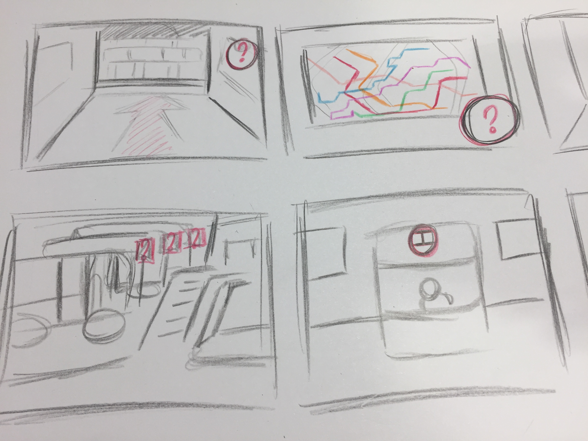

-
Assignment 1
Concept 1 - Public transport
Eén van de meest tijdrovende activiteiten op vakantie is het uitzoeken hoe het openbaar vervoer werkt als de taxi te duur is. Door het nieuwe concept kunnen vakantiegangers van tevoren ervaren hoe ze moeten navigeren als ze eenmaal in het land aankomen door middel van virtual reality. Ze krijgen informatie hoe ze kaartjes of speciale opwaardeer pasjes moeten kopen, hoe deze werken en hoe ze dit indien kunnen retouren. Ze kunnen zelf navigeren door het netwerk door gebruik te maken van trams, metro’s, bussen of-en iets dergelijks. Daarnaast zullen ze ook meteen zien waar de informatie balies zijn. Zo weten ze waar ze naartoe moeten als ze liever informatie willen vergaren van een persoon.
Concept 2 - Movement
Sommige mensen kunnen door fysieke of mentale beperkingen niet gemakkelijk naar optredens van hun favoriete artiesten. Ze kunnen soms recaps bekijken op internet of tv. Maar de beleving van het live meemaken is minder mogelijk. Een oplossing hiervoor is dat men tegen een betaling via een Oculus Rift de optreden kunnen bekijken. Alleen op het moment dat de daadwerkelijke optreden is. Zo krijgen zij het gevoel dat ze het daadwerkelijk hebben meegemaakt en dat ze alles als eerst hebben kunnen zien. Om het gevoel daadwerkelijker te maken voelen ze warmte van de stage, het gegil van het publiek, voelen ze bijna het zweet van de artiest op het podium.
Concept 3 – Art
Voor musicals of voorstellingen wordt het decor zo mooi en realistisch mogelijk gemaakt. Sommige voorwerpen zouden nog realistischer kunnen door kleine details, zoals de wind die door de bladeren waait. Door middel van belichting krijgt het decor een diepere ervaring. Als deze belichting zo op de boom wordt geschenen kan het lijken alsof de boom in een storm staat. Dit wordt dan niet alleen met bomen gedaan, maar bijvoorbeeld ook met een acteur/actrice die een mythisch wezen moet spelen. Ze hoeven niet geschminkt te worden of snel om te kleden in een ander kostuum. Zo kan ook gedaantewisselingen sneller ontwikkeld worden.
-
Assignment 2

The day the world changed
by Gabo Arora, Saschka Unseld, Nathan Brown, Tom Lofthouse, Jennifer Tiexiera, Nate Robinson, Igal Nassima, and Fifer Garbesi.After the United States dropped atomic bombs on Hiroshima and Nagasaki in Japan, we entered an era in which humanity could destroy itself. Virtual reality artists Gabo Arora and Saschka Unseld return to 1945 in a multiperson experience on the HTC Vive, placing participants in a virtual re-creation of a ruined building with artifacts from the bombings. Survivors tell the stories behind the objects — a stopped watch, a lunch box — as you touch them with ghostly hands. The Day the World Changed is notable not just for these stories, but for its dramatic visualizations of a world scarred by nuclear warfare. Test sites appear as parasitic black growths on a virtual globe that looks real enough to touch, producing smoky trails that threaten to overwhelm the planet. It moves seamlessly from the personal to the universal, using the medium’s sensory immersion to heighten the emotional impact. It’s a social experience that hasn’t made it out to the public, but it’s likely to keep appearing in art shows and festivals.
Terminal 3
by Asad J. Malik, Kaleidoscope VR, Anita Gou, and RYOT.The premise of augmented reality experience Terminal 3 is similar to the video game Papers, Please. Participants play a customs officer interviewing Muslim travelers to the US, choosing between different questions using HoloLens’ voice recognition system. In Papers, Please, these interactions are cold, rushed, and impersonal. But in Terminal 3, they’re strangely humanizing. The interview subjects are recorded holograms of real people, and they respond to questions about their work, families, and religious beliefs with long and thoughtful answers. You can easily get drawn down a line of questioning that doesn’t feel like an interrogation at all. Creator Asad Malik says the piece is based on his own experiences being repeatedly stopped and questioned at Customs. “By now, I’m a pro at being interrogated — and I kind of like it. It’s a weird guilty pleasure, because you have this trained person who’s being paid to listen to you and explore your story and take notes,” he says. In Terminal 3, “you can choose to be very authoritarian and challenge this person, or you can choose to just get to know them,” says Malik. “I’ve met interrogators who really just get to know you and enjoy your story.” Since it’s a HoloLens project, it’s not widely available, but you might be able to catch it at an event in the future.